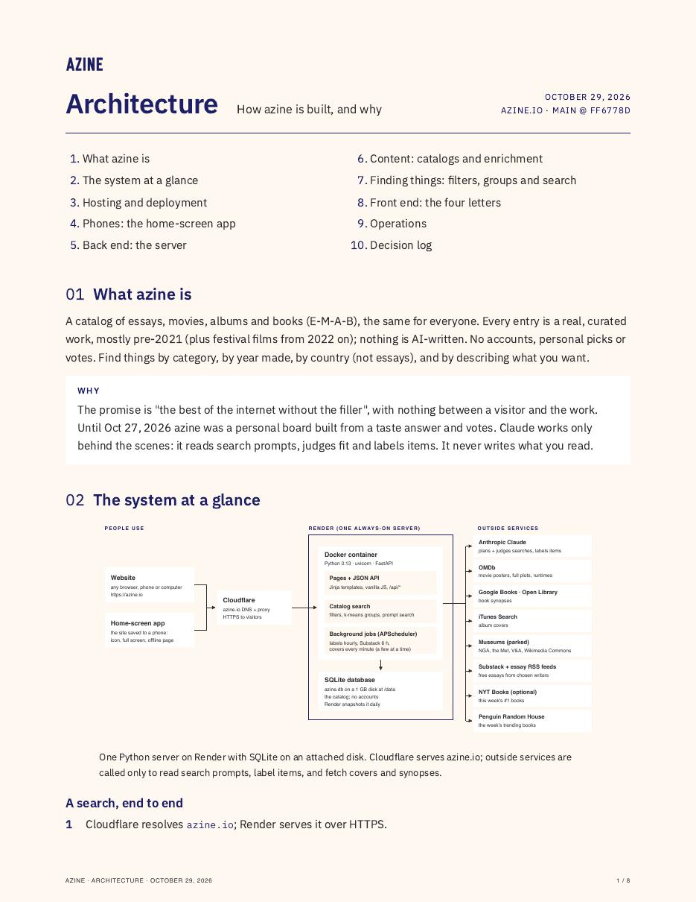

Now making
azine
A weekly recommendation board for essays, movies, albums and novels, for people who are mad at ads, influencers and AI slop.
01The summary
Feeds are built to keep you scrolling, not to help you find anything good. azine is a personal board of essays, movies, albums and novels, plus museum art, chosen for one person from a few sentences about what they love and don't, and from how they sort each day's picks. Every pick is a real work from a curated catalog, mostly from before 2021. No feeds, no influencers, no AI-written content.
- Describe your taste. The site opens on a wall of museum art, then a handwritten note asking what you love and don't, in 20 words or more. Claude reads it while you sign up.
- The board fills itself. Each work is described by its genres, subjects, tones and synopsis. Your likes are grouped into as many taste clusters as you really have, so a niche taste still gets its turn.
- Read, listen, watch. Today's picks, laid out as showcases, with a fresh wall of art from the world's museums.
- Sort. Drag each pick to "loved it" or "not for me", or mark it neutral. Every sort teaches the board what to bring next.
- It keeps going. Boxes renew on a cadence you set: essays daily, albums every three days, movies and novels weekly.
02The stack
| Server | Python 3.13, FastAPI, uvicorn, SQLAlchemy, Alembic, APScheduler, scikit-learn |
|---|---|
| Recommender | TF-IDF embeddings and taste clusters (after Pinterest's PinnerSage) |
| AI | The Claude API reads taste answers and labels new items. It never writes what you read. |
| Data | SQLite on a persistent disk, backed up daily |
| Front end | Server-rendered Jinja pages, vanilla JavaScript, one stylesheet, no build step |
| Hosting | Render (Docker), deployed on every push; azine.io on Cloudflare |
| Apps | An installable web app, and an iOS app (Capacitor) that shows the live site |
| Sources | OMDb, Google Books, Open Library, iTunes Search, Substack and essay feeds, and museum collections (the Met, NGA, V&A, Wikimedia Commons) |
03The documents

Architecture
The full design, every part in detail, and the log of decisions behind it.